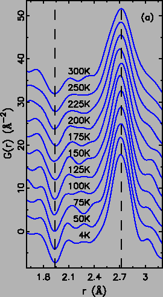
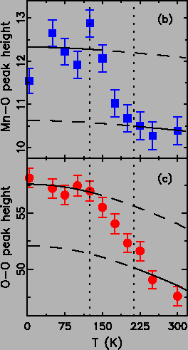
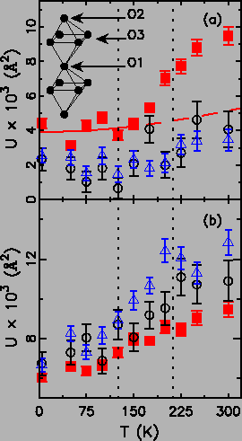
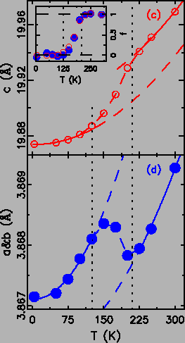
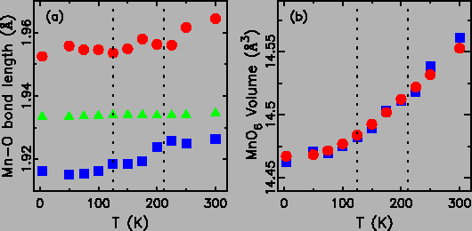

The PDF, G(r), tells the probability of finding pairs of atoms separated by the real space distance r. Thus every existing inter-atomic distance results in a Gaussian shaped peak, the width of which is determined by the atomic thermal motions [5]. In the case of one eg electron complete d3z2-r2 occupancy, a long Mn-O bond around 2.15 Å becomes possible [127] in CE ordering phase. However, there is no direct evidence for a r = 2.15 Å peak at any temperature (see Fig. 4.8). Note that Mn-O peak is upside down due to the negative Mn neutron scattering length [5]. The existence of such long bonds has been claimed in earlier PDF measurements at a much lower doping (x = 0.32) [162], but are not apparent in our data. In addition, the integrated area between 1.6 and 2.1 Å (i.e. the number of short Mn-O bonds) shows no sign of changes over the whole measured temperature range. We attribute the absence of 2.15 Å Mn-O bond to mixed dx2-y2 (minority) and d3z2-r2 (majority) orbital occupancies in CE phase. The long Mn-O bonds in both the type A AFM and CE CO phases appear to be shorter than 2.1 Å. This scenario has also been suggested by theoretical calculations [164], as a result of the reduced quasi-2D geometry.
|
  |
The proposed
dx2-y2 to
d3z2-r2 orbital occupancy transition also changes
the shape of MnO6 octahedra from oblate to prolate. The Mn-O bonds
change from four long and two short to two long and four short. Though
with the same four and two combinations, the prolate octahedron
actually has a broader Mn-O bond length distribution than the oblate,
because of the larger separation between the long and short bonds. The
underlying reasoning is that one eg electron will lengthen two Mn-O
bonds more than the case of four bonds. A broader distribution
directly leads to a broader PDF peak with the area conserved.
Therefore, the height of the PDF Mn-O peak, as a directly obtainable
experimental quantity, is expected to drop excessively across the
oblate to prolate octahedra transition.
Fig. 4.8(b) shows the temperature dependence of
the Mn-O (
 1.94 Å) peak height, with dashed vertical lines
indicating the transition temperatures. The PDF peak height normally
decreases with temperature due to thermal broadening, following the
Debye behavior. One guiding-to-the-eye PDF peak height Debye curve was
then calculated
and plotted on top of the data in Fig. 4.8(b) with
different offsets to match the high and low T data. The required
offset between the low and high T behaviors evidences the excess
reduction of peak height, as expected from the above reasonings. This
trend from the somehow noisy Mn-O peak height data is further
substantiated by the peak height temperature dependence of the O-O
pairs (
1.94 Å) peak height, with dashed vertical lines
indicating the transition temperatures. The PDF peak height normally
decreases with temperature due to thermal broadening, following the
Debye behavior. One guiding-to-the-eye PDF peak height Debye curve was
then calculated
and plotted on top of the data in Fig. 4.8(b) with
different offsets to match the high and low T data. The required
offset between the low and high T behaviors evidences the excess
reduction of peak height, as expected from the above reasonings. This
trend from the somehow noisy Mn-O peak height data is further
substantiated by the peak height temperature dependence of the O-O
pairs (
 2.72 Å) edging the MnO6 octahedron. The O-O peak
height data shown in Fig. 4.8(c) indicate similar
excess peak height falloff, though less sensitive to MnO6 octahedral distortions. These observations directly support the
scenario of the oblate to prolate MnO6 octahedra transition.
2.72 Å) edging the MnO6 octahedron. The O-O peak
height data shown in Fig. 4.8(c) indicate similar
excess peak height falloff, though less sensitive to MnO6 octahedral distortions. These observations directly support the
scenario of the oblate to prolate MnO6 octahedra transition.
The long Mn-O bonds in the oblate and prolate Mn3+O6 octahedra all lay down in the MnO2 plane implied by the dx2-y2 to d3z2-r2 orbital occupancy transition. However, the orientations of the JT distorted octahedra are in-extractable from the PDF peak height data, which only tell the overall octahedral shape. We then fit the conventional crystallographic model (space group I4/mmm, a = b = 3.8742 Å, c = 19.9844 Å)) where all MnO6 octahedra have the same shape with four equal in-plane Mn-O bonds. Though with the presence of local structure disorders, excellent fits to all experimental PDFs were obtained, suggesting the JT distortions in this bi-layered system are indeed rather small. The the refined thermal displacement parameters (TDP) of the oxygen atoms are examined for signs of disorders. As no symmetry is assumed in PDFFIT, the TDPs are conveniently decomposed into two components, parallel and perpendicular to the Mn-O bond directions. One direct consequence of the oblate to prolate octahedra transition is the increased Mn-O bond length mismatch in the MnO2 plane (as the long bonds in the prolate octahedra are significantly longer). This effect should show up on the parallel TDP components in Fig. 4.9(a)), where only the in-plane oxygen atom shows anomalous increase across the transition (deviating from the low T Debye behavior at high T). This is a strong indication that the long Mn-O bonds always stay in the MnO2 plane. Note that the TDP of Mn atoms show no sign of anomaly. To accommodate the long bonds in the prolate octahedra, we also expect the MnO6 octahedra to increase tilting amplitude. As no octahedral tilting is present in the structure model, sudden increase of the perpendicular TDP components is expected. Fig. 4.9(b) evidences the anomalous increases on both the in-plane and out-of-plane oxygen atoms. These results suggest the oblate to prolate octahedra transition to be the dx2-y2 to d3z2-r2 orbital occupancy transition type.
|
  |
Consistent behaviors are also observed on the lattice constants from the Rietveld analysis of the same data (shown in Fig. 4.9(c,d)). Clearly, the intermediate range between the two transition temperatures appears to be a cross-over region between the low and high T regions, which can be well described with the same Debye model (solid lines) offset-ed differently. The in-plane (a = b) and apical (c) constants show similar trends, though with opposite signs. We argue that both behaviors can be qualitatively explained by the dx2-y2 to d3z2-r2 orbital occupancy transition as follows. At low T, eg electrons occupy the dx2-y2 orbitals. Around 115 K, the orbital occupancy transition to d3z2-r2 sets in. This process in fact distributes more electron densities along the c axis, due to the donut shaped ring in the d3z2-r2 type orbitals. This will lengthen the c axis. To the opposite, a & b axis would decrease correspondingly, e.g. bond valence and/or volume considerations. The coexistence of dx2-y2 and d3z2-r2 orbital occupancy is expected in the cross-over region. Using the extrapolated values (dashed lines) from both the low and high T Debye curves, we then extract the fraction of occupied d3z2-r2 orbitals by assuming linear combinations. The inset in Fig. 4.9(c) shows thus obtained fraction of the d3z2-r2 orbital occupancy (type CE phase), noting the good agreements between values calculated from the in-plane and apical lattice constants.
Finally, we show the three crystallographically distinct Mn-O bond lengths from Rietveld refinements within one MnO6 octahedron in Fig. 4.10(a). The in-plane Mn-O3 distance behaves in the same way as the a = b lattice constants, though not apparent under the shown scale. The significant observation is that the three Mn-O bonds are rather close in length, i.e., the difference is less than 0.04 Å at any temperature. The absence of long Mn-O bonds around 2.15 Å is consistent with our PDF results, supporting the mixed dx2-y2 and d3z2-r2 type orbital occupancy picture. As the eg electron stays always inside the MnO6 octahedra, the octahedral volume is not expected to show significant anomalies. Fig. 4.10(a) shows both the octahedral and unit cell (scaled) volume increases normally with temperature as expected. Note that drastic octahedral and unit cell volume changes are found near the insulator-metal transitions where the eg electron mobility changes [165]. The absence of volume anomalies suggest the residence of the eg electron within the octahedron at all temperatures, and only its orbital occupancy changes.
|
 |